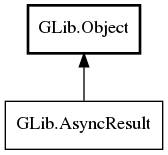

GLib.AsyncResult Reference Manual
Packages
gio-2.0
GLib
AsyncResult
get_source_object
get_user_data
is_tagged
legacy_propagate_error
AsyncResult
Object Hierarchy:

Description:
public
interface
AsyncResult
:
Object
All known implementing classes:
SimpleAsyncResult
Namespace:
GLib
Package:
gio-2.0
Content:
Methods:
public
abstract
Object
get_source_object
()
public
abstract
void
*
get_user_data
()
public
abstract
bool
is_tagged
(
void
* tag)
public
bool
legacy_propagate_error
()
throws
Error